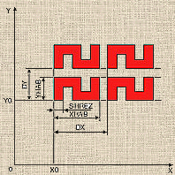

Лабораторная работа №2. |
АЛГОРИТМ СИНТЕЗА ПАРАМЕТРИЗУЕМОГО ОБЪЕКТА СРЕДСТВАМИ ЯЗЫКА РАСШИРЕНИЯ AutoLisp
Цель работы: изучение математических методов, моделей и программных средств определения геометрических отношений элементов изображения.
Порядок выполнения работы:
- изучить теоретическую часть ;
- получить задание, включающее множество эскизов сходных объектов автоматизированного проектирования, для которых необходимо разработать параметризуемую модель;
- синтезировать модель по описанному в теоретической части алгоритму; разработать на языке AutoLISP программу для автоматического построения изображения чертежа посредством параметризации модели и подготовить ее слайд - экспериментальная часть;
- проанализировать характеристики программы и подготовить отчет по лабораторной работе;
- ответить на контрольные вопросы
Список рекомендуемой литературы
При генерации изображений множеств повторяющихся или сходных объектов автоматизированного проектирования целесообразно использование их параметризуемых моделей, настраиваемых на требования конкретных объектов. Это позволяет быстро адаптировать AutoCAD к выпуску документации при смене объектов проектирования.
Отличительной особенностью САПР AutoCAD является возможность ее адаптации caмим пользователем на основе специального языка AutoLISP, встроенного в систему. С помощью AutoLISP , являющегося диалектом функционального языка LISP программирования задач искусственного интеллекта не численного характера (от англ. LISP Processing - обработка списков), можно описывать настройку модели.
AutoLISPотличают гибкость и простота применения. Синтаксис языка основан на префиксной форме описания функций, в начале которой содержится имя операции, а затем перечисляются операнды - список так называемых атомов или списков. Списком является и геометрическая модель объекта проектирования: трехмерная точка - это список трех вещественных координат, трехмерная грань - список образующих ее трехмерных точек, а трехмерное тело - список граней и т.д. Вложенность выражений AutoLISP, соответствующая числу уровней иерархии геометрических моделей, ограничена 100.
Рассмотрим слайд (нередактируемое изображение) модели простейшего чертежа матрицы резистивных пленочных элементов типа "меандр" или "змейка" рис .1. для гибридных интегральных микросхем.

Рис .1. Слайд параметризуемой модели матрицы резисторов.
Для настройки параметризуемой модели чертежа используем следующие параметры:
- горизонтальную координату ХО привязки первой точки первого резистора;
- вертикальную координату YО той же точки;
- горизонтальный размер резистора ХНАВ;
- вертикальный размер резистора YHAB;
- ширина резистора SHREZ;
- количество столбцов матрицы CN;
- количество строк матрицы RN;
- горизонтальный размер шага матрицы DX;
- вертикальный шаг матрицы DY.
Программа на AutoLISP для описания данной модели состоит из пяти безаргументных функций:c: R(), REZ(), ENTER_REZ(), ENTER_ARR(), ARR().
- Функция R() является корневой (от англ. root - корень) программой, собирающей остальные функции воедино.
- Функция REZ() вычерчивает на экране полинию - контур единичной параметризуемой модели - резистора.
- Функция ENTER_REZ() выполняет ввод параметров резистора.
- Функция ENTER_ARR() выполняет ввод параметров матрицы.
- Функция ARR() формирует матрицу резисторов в соответствии со значениями параметров.
Для отображения слайда рис .1. на экране в программу необходимо командами падающего меню DRAW нарисовать его, командой MSLIDE сохранить слайд с именем “ИМЯ_СЛАЙДА" и включить в AutoLISP - программу безаргументную функцию SLIDE():
(defun SLIDE ()
(command "VSLIDE" “ИМЯ_СЛАЙДА”)),где используется, то же имя, под которым регистрируется будущий чертеж (см. ниже) в сеансе работы с AutoCAD.
Чтобы AutoLISP - программа могла выполняться, необходимо, чтобы она находилась в файле под именем acad.lsp в директории ACAD. Для выполнения описанной программы синтеза параметризуемых объектов при работе с AutoCAD выполняется следующая последовательность действий:
- Вход в AutoCAD в режиме 1 "Begin a NEW drawing”.
- Регистрация будущего чертежа, например, под именем "REZ”.
- По запросу AutoCAD "Command" вводятся имя корневой функции и значения всех параметров в соответствии с отображенным слайдом модели. После ввода данных настройка модели произведена а построенное автоматически изображение соответствует объекту.
Алгоритм синтеза параметризуемой модели.
- Привести каждый из множества исходных объектов к параметризуемому виду,заменив конкретные размеры настраиваемыми параметрами.
- Сравнить параметризуемые модели и выявить их общую часть.
- На основе общей части, минимизируя число настроечных параметров, синтезировать модель.
Экспериментальная часть
- Набрать исходный текст программы на AutoLISP в файле: “acad.lsp” с помощью любого из редакторов файлов и создать слайд, пользуясь редактором AutoCAD.
- Поместить файл acad.lsp в директорию ACAD.
- Выполнить последовательность действий в соответствии с описанным в предыдущем разделе сеансом.
- Отладив программу, распечатать ее текст на принтере.
- Распечатать на принтере чертеж объекта командой AutoCAD PRPLOT.
Контрольные вопросы
- В чем отличие параметризуемой модели от чертежа ???
- Каким образом синтезируется слайд ???
- Объяснить функции отдельных операторов и их операндов ???
- Какие команды AUTOCAD использованы и почему ???
- Какие особенности языка LISP использованы в AUTOCAD???
Список рекомендуемой литературы
- Роджерс Д., Адам Дж. Математические основы машинной графики/Пер. с англ. -М.: Машиностроение. 1980. -240 с.
- Роджерс Д. Алгоритмические основы машинной графики/ Пер.с англ. –М: Мир, 1989.-512с.
- Разработка САПР в 10 кн. Кн.7 - Графические системы САПР: практическое пособие/ В.Е. Климов/Под ред. А. В. Петрова. -М.: Высш. шк., 1990. – 142с.
- Гардан И., Люка М. Машинная графика и автоматизация конструирования/ Пер. с фран. -М.: Мир. 1987. - 272 с.
- Справочник со машинной графике в проектировании/ Михаиленко В.Е. и др.; Под ред. В.Е. Михаиленко. -Киев: Будивельник. 1984. - 184 с.